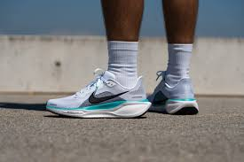

Acerca de nosotros
En Fenta Snikers somos apasionados por el calzado. Nos especializamos en la venta de tenis al menudeo,
ofreciendo modelos exclusivos, de las mejores marcas y con diseños que marcan tendencia.
Nuestro compromiso es brindarte no solo un par de tenis, sino una experiencia de compra única,
en la que encuentres comodidad, estilo y precio justo en un solo lugar.
Estamos ubicados en la Plaza Las Américas, un punto estratégico de la ciudad,
donde nuestro equipo de asesores te recibirá con atención personalizada para ayudarte a elegir el calzado perfecto para ti.
Nuestra historia
Fenta Snikers nació con una visión clara: hacer que el calzado de calidad estuviera al alcance de todos.
Comenzamos como un pequeño local con un catálogo reducido, pero gracias a la confianza de nuestros clientes hemos crecido
hasta convertirnos en una referencia en tenis urbanos y deportivos en Morelia.
Cada par de tenis que ofrecemos representa nuestro esfuerzo por acercar lo mejor de la moda internacional
a jóvenes, adultos y familias que desean lucir siempre a la vanguardia, sin sacrificar comodidad ni presupuesto.
Misión
Nuestra misión es brindar calzado de calidad que combine innovación, estilo y comodidad,
adaptándose a las necesidades de cada cliente.
Queremos que cada persona que nos visite se lleve mucho más que un par de tenis:
una experiencia de confianza, asesoría personalizada y la seguridad de haber hecho la mejor elección para su estilo de vida.
Visión
En Fenta Snikers trabajamos día con día para ser reconocidos como la tienda líder en la venta de tenis al menudeo en Michoacán,
con el objetivo de expandirnos a todo México.
Soñamos con ser la primera opción de quienes buscan calzado de moda y alto rendimiento,
respaldados por nuestro compromiso con la calidad, la accesibilidad y la satisfacción total del cliente.
Calidad del calzado
Cada par de tenis que ofrecemos pasa por un proceso de selección cuidadoso, garantizando materiales resistentes,
diseños innovadores y la más alta comodidad.
Contamos con modelos ideales para actividades deportivas, uso diario o simplemente para marcar estilo en cualquier ocasión.
Confiamos tanto en la calidad de nuestro calzado que ofrecemos garantía de satisfacción:
porque cuando eliges Fenta Snikers, eliges durabilidad, confianza y moda al mejor precio.
Catálogo
| Imagen |
Modelo |
Precio |
Descripción |
 |
Urban Classic |
$1,200 MXN |
Tenis casuales para uso diario, cómodos y resistentes. |
 |
Street Runner |
$950 MXN |
Diseño deportivo ideal para correr y entrenar. |
 |
City Flex |
$859 MXN |
Tenis ligeros para caminar en la ciudad con estilo. |
 |
Retro Vibe |
$1,300 MXN |
Modelo retro en tendencia, ideal para jóvenes. |
 |
Urban Pulse |
$1,150 MXN |
Diseño urbano con alta durabilidad y comodidad. |
 |
Pro Sport |
$1,050 MXN |
Tenis deportivos para gimnasio y actividades físicas. |
Tenis recomendados para correr: Nike Air Zoom Pegasus 41

Los Nike Air Zoom Pegasus 41 ofrecen una excelente combinación de amortiguación y ligereza.
Su tecnología ReactX proporciona un rebote suave en cada paso, mientras que la malla superior mejora la ventilación.
Son ideales para corredores de todo nivel, brindando soporte, confort y durabilidad en entrenamientos largos o cortos.